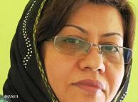

پذيرش > سایت نوشته ها > خشونت پلیس علیه زنان؛ الگویی برای بزهکاران


 خشونت پلیس علیه زنان؛ الگویی برای بزهکاران خشونت پلیس علیه زنان؛ الگویی برای بزهکاران
4 مرداد 1390 - گفتگو با پروین بختیارنژاد - نسخه قابل چاپ
روزنامه جام جم نوشت: «شش عضو یک باند شرارت که به اتهام آدمربایی، آزار و اذیت یک زن جوان و سرقت اموالش تحت تعقیب پلیس آگاهی ملارد بودند، دستگیر شدند».
پس از واقعه تجاوز گروهی در جشنی واقع در یک باغ در اطراف اصفهان، تجاوز گروهی به زنی در روستایی نزدیک کاشمر و تجاوز چهار مرد به پزشک زن روستایی در استان گلستان، این چهارمین مورد فاش شدهی تجاوز گروهی در ایران است.
۵۰۰ فعال حقوق زنان در بیانیهای نسبت به تکرار اینگونه حوادث ابراز نگرانی کردهاند. آنها گرفتن انگشت اتهام به سوی زنان را در این موارد به شدت محکوم کرده و این رویکرد را راهی برای دور کردن زنان از عرصه عمومی دانستهاند.
نویسندگان این بیانیه عکسالعملهای مسئولان در قبال این حوادث را که رفتار زنان را عامل اصلی وقوع تجاوز میدانند، نوعی پاک کردن صورت مسئله دانسته و از آنان خواستهاند که به جای این، به فکر حمایتهای عاطفی از آسیبدیدگان باشند.
در این بیانیه همچنین رفتارهای خشونتآمیز پلیس با زنانی که از سوی حکومت "بدحجاب" نامیده میشوند، زمینهساز بروز چنین فجایعی عنوان شده است.
با پروین بختیارنژاد نویسنده و پژوهشگر در زمینه خشونت علیه زنان و یکی از امضاکنندگان این بیانیه گفت و گو کردهایم.
دویچهوله: خانم بختیارنژاد! در بیانیهای که فعالان زن در مورد تجاوزهای گروهی به زنان در ایران منتشر کردهاند و شما نیز یکی از امضاکنندگان آن هستید، به نکاتی اشاره شده است. ازجمله عنوان شده هدف از این که در اکثر این تجاوزها انگشت اتهام به سوی زنان نشانه میرود، این است که زنان از عرصهی عمومی حذف شوند. اگر ممکن است در مورد این بند از بیانیه بیشتر برای ما توضیح دهید.
پروین بختیارنژاد: بله، در یکی از مفاد بندهای این بیانیه بر این تاکید شده که زنان وحشتزده از عرصهی عمومی به حوزههای خصوصی پناه برند و در آنجا گفته شده که این امر زمینههای حذف زنان را از عرصههای اجتماعی و مبارزات اجتماعی فراهم میکند. در واقع این بند از این اطلاعیه براین نکته تأکید دارد که زمانی که جامعه ناامن باشد و همین طور مجری قانون و پلیس هم اقدامی عملی و جدی در خصوص ایجاد امنیت برای زنان نداشته باشند، ناخودآگاه زنان از عرصهی اجتماعی به عرصهها و حوزههای خصوصی کشانده خواهند شد.
نکتهی دیگری که باز در این بند آمده مبنی براین است که در مبارزات قانونی و مدنی آن قدر فضا برای حضور زنان تنگ شود واین فضا ناامن جلوه داده شود که زنان را از فعالیتهای اجتماعی و حضور اجتماعی منصرف کنند و همین زمینههای سوق دادن زنان از فعالیتهای اجتماعی در عرصهی اجتماع به حوزههای خصوصی است که انزوای آنها را فراهم میکند.
در اکثر اخباری که در مورد تجاوز به زنان منتشر شده، یک نکته مشترک وجود دارد و آن این که بیشتر خود زنان مقصرند. انگار به نوعی آقایان هیچ تقصیری ندارند و وقتی زنی حجابش را رعایت نکند یا بد لباس بپوشد و یا بد رفتار کند، آن مرد "ناچار" است که به او تجاوز کند. در این بیانیه هم اشاره شده که انگار تجاوز بخشی از رفتار جنسی مردانه است. در این مورد نظرتان چیست؟
البته این سخن جدیدی نیست. سه دهه است که زنان ایران با این قضیه روبرو هستند که از مردان در رفتارهای اجتماعی و رفتارهای جنسیشان بارها و بارها با شیوههای مختلف سلب مسئولیت شده و کل مسئولیترفتار مردان را هم به گردن زنان انداختهاند.
ولی این که مجری قانون و سخنگویان نهادهای فرهنگی ـ دولتی میآیند و مسئولیت این اتفاقات وحشتناکی را که برای زنان افتاده و مرتب دارد تکرار میشود، به گردن زنان میاندازند و مطرح میکنند که اگر شما نوع پوششتان همان پوشش رسمی دولتی باشد، این اتفاقات برایتان نمیافتد، در واقع نوعی پاک کردن صورت مسئله و نوعی عدم برخورد دقیق و علمی با اتفاقاتی است که در جامعه میافتد. مجری قانون برای این که بخواهد این مسئولیت و کمکاری و اهمالی را که در اجرای امنیت بر عهدهاش بوده از دوش خود بردارد، میآید و خود قربانی را متهم خطاب میکند.
این اخبار و این اتفاقات درست زمانی رخ میدهند که ما میبینیم بیشترین میزان وقت و بودجه و هزینه و تبلیغات به مسئلهی گشتهای ارشاد با عناوین مختلف مانند «امنیت اخلاقی»، «مبارزه با اراذل و اوباش»، «مبارزه با شروران» و غیره اختصاص داده شده است. ما میبینیم آن قدر برای مبارزه با "ناامنیهای اجتماعی"دارد هزینه میشود، البته آن طور که به آن میگویند و بیشترش هم معطوف به حجاب زنان است، اما از این طرف میبینیم که اتفاقاً ناامنیهای اجتماعی دارد بیشتر میشود. این تناقض را چه طور میشود توضیح داد؟
در این دوسه دهه مرتبا بر این طبل کوبیده شده که با زنان براساس نوع پوشش آنها چک و چانه بزنند و از روشهای خشونتآمیز استفاده کنند برای این که زنان را یک شکل و یک رنگ و یک مدل نشان دهند و مجبورشان کنند که در عرصهی اجتماع یک شکل باشند. اما همان طور که خودتان هم گفتید در عمل هیچ پیشرفت و هیچ پیشبردی در این تئوریشان نداشتهاند. ما عملاً میبینیم که هیچ گونه پیشرفتی در امنیت و آن ارزشهای اخلاقی که باید منجر به امنیت شود، اتفاق نیافتاده است.
در حالی که اگر این ناامنی مشخصاً مربوط به خود زنان باشد، با یک مطالعهی مختصر در کشورهای دیگر هم باید همین قدر ناامنی وجود داشته باشد و خیلی بیشتر از آن وجود داشته باشد. پس چرا این همه ناامنی پشت سرهم در کشور ما برای زنان اتفاق میافتد؟ یعنی آن چیزی که در حال حاضر در جامعه دیده میشود، شکست تئوریهاییست که ما مرتباً از نهادهای فرهنگی − دولتی شنیده و دیدهایم.
اتفاقاً نظریهای هست که میگوید اصلاً خود این برخوردها باعث ترویج خشونت در جامعه میشود. آیا شما هم با این نظر موافقاید؟
علیرغم این که قانون و مجری قانون سعی کرده در این دو سه دهه، کنترل جامعه را نسبت به زنان با روشهای خاص خودش که توأم با خشونت بوده به دست گیرد، فعالان زنان از زمان شروع ریاست جمهوری آقای احمدینژاد یا در زندانها بودهاند یا اخبار تجاوز به زنان و مردان جوان در زندانها شنیده شده یا آزارهای جنسی و جسمی و ضرب و شتم زنان در خیابانها در ملاءعام اتفاق افتاده است. فحاشیهای بسیار رکیک که خود من بارها در آن تجمعات بودم و شنیدم و دیدم که چه الفاظ رکیکی را پلیس نسبت به فعالین زنانی به کار میبرده که حرکتهای نمادین اعتراضی داشتند.
متأسفانه میخواهم بگویم همه این موارد، شرایط الگوپذیری افراد بزهکار را از پلیسی که به این روشها دست میزند و از این روشها استفاده میکند فراهم کرده و بزهکاران فهمیدهاند و به این درک از رفتار پلیس رسیدهاند که تجاوز به زنان اشکال ندارد، هتک حرمت به زنان اشکال ندارد، تهدید زنان اشکال ندارد، فحاشی به زنان اشکال ندارد. در نتیجه میبینیم که متأسفانه شرایط روز به روز به لحاظ اجتماعی و به لحاظ امنیت برای زنان سختتر میشود و همان طور که در اطلاعیه گفته شده است همین شرایط است که زنان را از عرصهی عمومی به حوزهی خصوصی میراند.
شما در بند پایانی بیانیه از گزارشگر ویژه حقوق بشر آقای احمد شهید خواستهاید که نسبت به تبعیض علیه زنان در ایران توجه نشان دهد و اگر به ایران رفت، از نزدیک با فعالان زن در ایران دیدار و گفتوگو کند. آیا برای این کار برنامهریزی خاصی کردهاید؟ آیا با خود ایشان تماس گرفتهاید یا در فکر تماس گرفتن با ایشان و دادن گزارشهایتان به ایشان هستید، یا این که فقط به این بیانیه و به یک دعوت نمادین بسنده کردهاید؟
همان طور که گفتید، این بیانیه در واقع یک دعوت نمادین است ولی میتواند آغاز یک حرکت نیز باشد. این شروع گزارشهایی در خصوص زنان است، شروع فهرست کردن کاستیهایی است که در مورد تصویب قوانین ضد زن و ندیده گرفتن ابتداییترین حقوق زنان وجود دارند و همین طور حمایت نکردن مجری قانون از زنان و با بیاعتنایی از کنار ناامنیها گذشتن. اینها در واقع مصداق بارز و آشکار نقض حقوق زنان و نقض حقوق بشر است. به همین دلیل در این بیانیه نیز از آقای احمد شهید خواسته شده که با فعالان زن دیدار داشته باشند و گزارش جامعی از نقض حقوق زنان تهیه کنند و این گزارش را به نهادهای بینالمللی و سازمان ملل ارائه دهند و وضعیت زنان را توضیح دهند که الان چه اتفاقات وحشتناکی دارد برای زنان میافتد.
دویچه وله
ارسال به
بالاترین
،
توییتر
،
فریندفید
،
فیسبوک
در همين بخش :
 یک خبر تلخ؟ یک قانونشکنی؟ یک تصمیم بخشنامهای جدید؟ یک خبر تلخ؟ یک قانونشکنی؟ یک تصمیم بخشنامهای جدید؟
چرا بایست به سکسوالیته پرداخت؟ / نفیسه آزاد
آزارجنسی خانگی؛ «قربانی» نه، «نجات یافته»
زنان، بزرگترین بازندگان بهار عرب
سانسور از دیدگاه جنسیتی/الهه امانی
ديگر بخش ها :
طرح یک میلیون امضا
|
مقالات
|
سایت نوشته ها
|
اخبار
|
گزارش كمپين
|
گفت و گو
|
علیه سکوت
|
كوچه به كوچه
|
نامه های شما
|
گزارش ویژه
|
گفتگو با اعضا
|
ویژه سالگرد کمپین
|
تصویر برابری
|
دل آرام علی
|
تریبون
|
مقالات
|
تاریخ شفاهی
|
خارج از چارچوب
|
کتابخانه
|
درباره کمپین
|
کمپین در شهرها
|
کمپین در بند
|
صدای تغییر
|
ویژه 22 خرداد
|
لایحه حمایت از خانواده
|
گالری
|
عشا مومنی
|
امیر یعقوبعلی
|
خدیجه مقدم
|
راحله عسگری زاده و نسیم خسروی
|
پروین اردلان،جلوه جواهری، مریم حسین خواه، ناهید کشاورز
|
زینب پیغمبرزاده
|
سعیده امین، سارا ایمانیان، محبوبه حسین زاده، ناهید کشاورز و همایون نامی
|
احترام شادفر
|
نسیم سرابندی زاده،فاطمه دهدشتی
|
وبلاگ مهمان
|
پرونده خرم آباد
|
دستگیری ها
|
مریم مالک
|
پرستو اللهیاری
|
مهرنوش اعتمادی
|
سمیه رشیدی
|
Other Languages
|
همراهان
|
«فراخوان کمپین ده روز با بهاره هدایت»
| English
|